Island Race
Island Race là cuộc đua thuyền theo chặng: người chơi vào một nhóm nhỏ do server ghép, mỗi level thắng = thuyền tiến 1 ô, ai về đích (đủ số level mục tiêu) trước nhất…
Mô tả
- Island Race là cuộc đua thuyền theo chặng: người chơi vào một nhóm nhỏ do server ghép, mỗi level thắng = thuyền tiến 1 ô, ai về đích (đủ số level mục tiêu) trước nhất thì thắng chặng và nhận rương; chỉ 1 người thắng mỗi chặng.
- Có 3 chặng với số người giảm dần (5 → 4 → 3) và mục tiêu tăng dần (mặc định 5 → 7 → 10 level), rương chặng sau giá trị hơn.
- Khi vào đua có thể được tặng 30 phút mạng vô hạn (cờ
ultrong config). - Thiết kế tạo áp lực 'thắng nhanh trước người khác' trong thời gian ngắn.
Thiết kế chi tiết
Tóm tắt thiết kế
CodeAPK Mở từ level 86; phải bấm Start mới vào (EnterIslandRaceHttpCommand). 3 chặng: 5 người cần 5 level → 4 người cần 7 → 3 người cần 10. Chỉ hạng 1 (RewardedPlayerCount 1) nhận rương và đi tiếp; về sau người khác là dừng.
Code Mỗi level thắng = thuyền tiến đúng 1 ô (islandRaceData.Add(1)), không nhân Hard / Magic Pot; thua không lùi. Đây là đua “số level thắng” trong thời gian ngắn, khác các giải tính hệ số.
APK Rương: chặng 1 UL 15 phút + UR 15 phút; chặng 2 UL 15 phút +  UD 15 phút + 1 R; chặng 3 1 D +
UD 15 phút + 1 R; chặng 3 1 D +
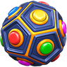
1 EB + 1 H +
1 H + 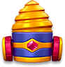
1 DR. Cờul trong config có thể tặng thêm 30 phút mạng vô hạn khi vào (mặc định APK không bật).Code Không vào khi event còn ≤ 15 phút. Người đã hết level thường chỉ vào được khi Champions Arena đang mở và còn > 15 phút.
APKLive 11/11 Chung ô cột trái với Gem Hunt (ISLAND_RACE p80 / GEM_HUNT p58) và đứng đầu hàng icon prelevel (p10). Nhận định Cả 3 chặng chỉ cần 22 level thắng, thưởng chủ yếu là booster vô hạn 15 phút để tiêu ngay trong lúc đua.
Luồng người chơi từng bước
- Nhận eventServerCodePing /
GetIslandRaceHttpCommand; bản server và bản user lưu tách trongIslandRaceTableItem, thiếu config thì dùngisland_race_default_config. Icon ở trạng thái Start. - Dialog bắt đầu / nhắcGiao diệnCode
IslandRaceStartDialog: “Beat {0} levels before others to win rewards and advance to next stage!”, tooltip “Win Stage {0} to get these rewards!”. Chưa tham gia thì có popup nhắc (reminder), lưu số lần đóng. - Bấm StartNgười chơiCode
OnStartButtonClicked→TryEnterEvent(cần internet: “You need an internet connection to start Island Race!”) → nhận nhóm, chặng 1, 5 thuyền. Vào được từ dialog, màn đua hoặc Events tab. - Quà
 30 phút mạng (nếu bật)ClientCode
30 phút mạng (nếu bật)ClientCodeUserConfig.ul = true→GiveUnlimitedLifeReward:AddUnlimitedLivesInSeconds(1800). - Thắng level → tiến 1 ôNgười chơiCodeChỉ khi trong nhóm, còn giờ và chưa đạt mục tiêu chặng.
UpdateIslandRaceHttpCommandgửi điểm; prelevel ghi “Race to {0} levels!” và panel vị trí các thuyền (IslandRacePrelevelPanel). - Thuyền đối thủ chạyServerCodeResponse trả điểm các thuyền khác (
UpdateMembers,didAnyPlayerReachTarget); về Home thuyền chạy animation. Đối thủ là người hay bot và tốc độ của họ do server quyết định. - Tooltip rương chặngGiao diệnCodeMỗi chặng tự hiện tooltip rương một lần (“First place will get these rewards!”), lưu eventId + stage đã hiện.
- Về đích trước → thắng chặngNgười chơiCodeAPKHạng 1 và điểm ≥ mục tiêu: popup “You won the race!” (analytics
IROpen),ClaimOrContinueButtonClicked→TryGetStepForStagetrao rương (nguồnIR-Step), ClaimState = Win. - Người khác về trước → thuaGiao diệnCode
FinalListReceivedchốt danh sách, bảng hiện “Race is over!”, ClaimState = Lose; Continue đóng đua cho người chơi, không có rương. - Chặng 2 và 3Người chơiCodeThắng và Continue thì sang chặng sau với nhóm ít người hơn;
IslandRaceSceneStageConfigđổi màu biển, cỡ thuyền, nền tiêu đề và hình rương theo chặng. - Hết giờ / phiên cuốiClientCodeHết giờ hoặc thoát app:
LastSessionCompleted→ reset dữ liệu đua, chờ event mới. - Playtest13/11 — ba chặng và claimtesterPlaytestCodeCache event397/version409, gia hạn offline: start chặng1 yêu cầu vượt5level; chưa ghép nhóm. Bấm Bắt đầu: spinner khi UID bị cô lập; không tạo nhóm thật. Bổ sung bản ghi chính tài khoản vào PlayerData type10/11: hàng người chơi và nút Nhận xuất hiện; không có đối thủ thật. Mở rương:15phút mạng vô hạn+Rocket; Rocket24→25, ClaimState0→2 ngay popup thưởng. Nhận rương3:ElectroBall1+Hammer1+Drill1; restart ngay popup trước bấm đóng. Restart giữ phần thưởng chặng3 và ClaimState2, icon đua không còn trên Home; không nhận lặp. Đóng thưởng chặng1: start chọn chặng2 mục tiêu7; DB Stage vẫn1,ClaimState2 cho đến khi vào nhóm tiếp. Fixture chặng2: mục tiêu7, tooltip15phút mạng vô hạn+Dynamite1;4làn. Fixture chặng3: mục tiêu10, tooltip ElectroBall1+Hammer1+Drill1;3làn. Tooltip chặng1 theo cache:15phút mạng vô hạn+Rocket1. Tooltip được mở bằng tap, chưa kiểm chứng tự hiện. Toàn bộ nhóm/rank/điểm hoàn tất là fixture offline; config lấy cache client. Chưa xác nhận đua tự nhiên, đối thủ, thua chặng hoặc server.
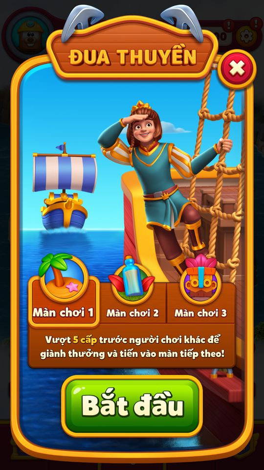
Cache event397/version409, gia hạn offline: start chặng1 yêu cầu vượt5level; chưa ghép nhóm. 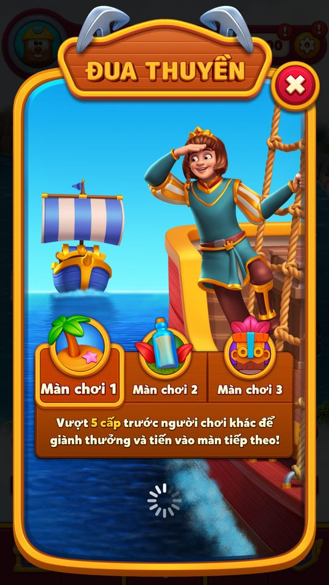
Bấm Bắt đầu: spinner khi UID bị cô lập; không tạo nhóm thật. 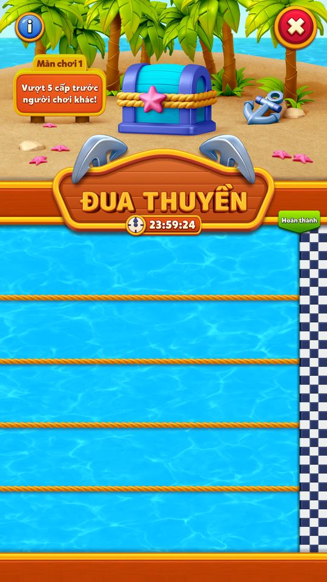
Fixture nhóm1 chưa có PlayerData: giao diện5 làn trống, chặng1 mục tiêu5. 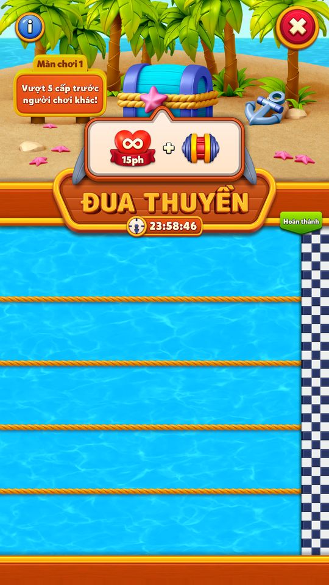
Tooltip chặng1 theo cache:15phút mạng vô hạn+Rocket1. 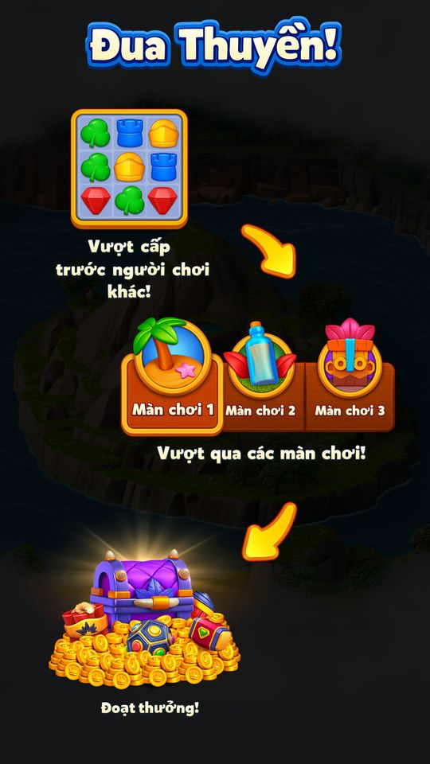
Info giới thiệu vượt level trước đối thủ, qua3chặng và nhận thưởng. 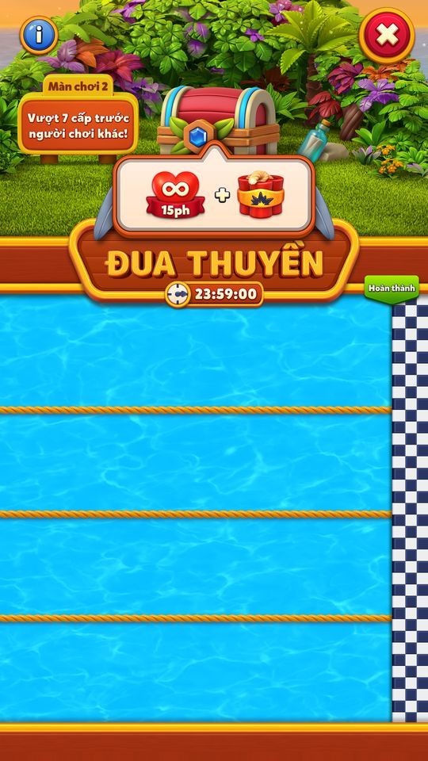
Fixture chặng2: mục tiêu7, tooltip15phút mạng vô hạn+Dynamite1;4làn. 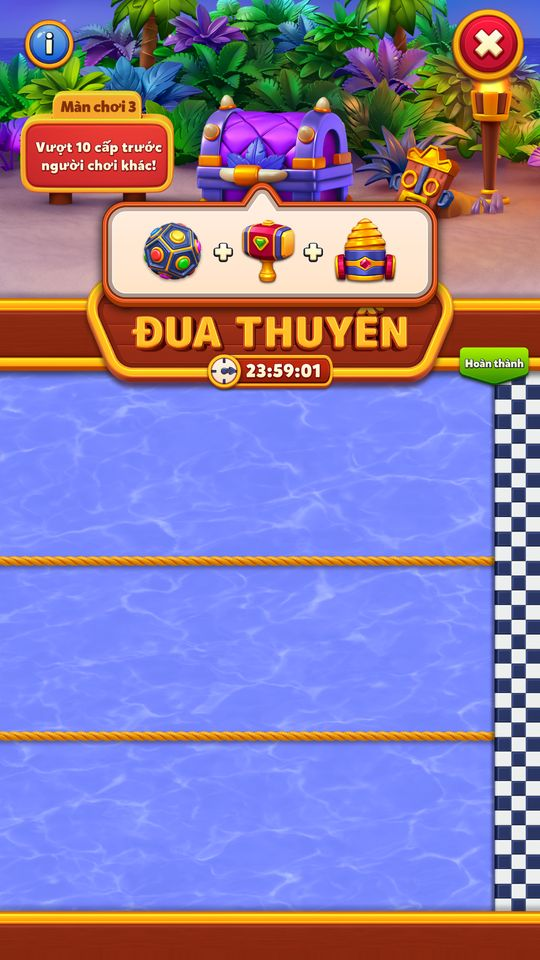
Fixture chặng3: mục tiêu10, tooltip ElectroBall1+Hammer1+Drill1;3làn. 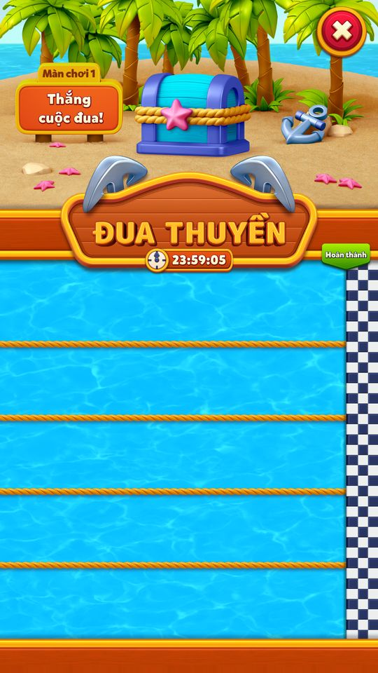
Fixture score5/rank1/HasFinalList nhưng thiếu PlayerData: hiện Thắng cuộc đua, chưa có hàng nhận thưởng. 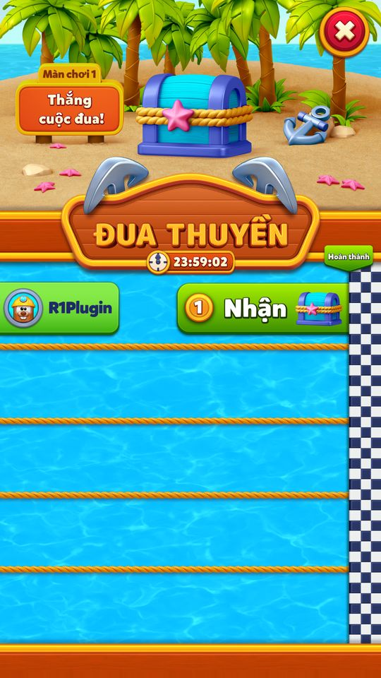
Bổ sung bản ghi chính tài khoản vào PlayerData type10/11: hàng người chơi và nút Nhận xuất hiện; không có đối thủ thật. 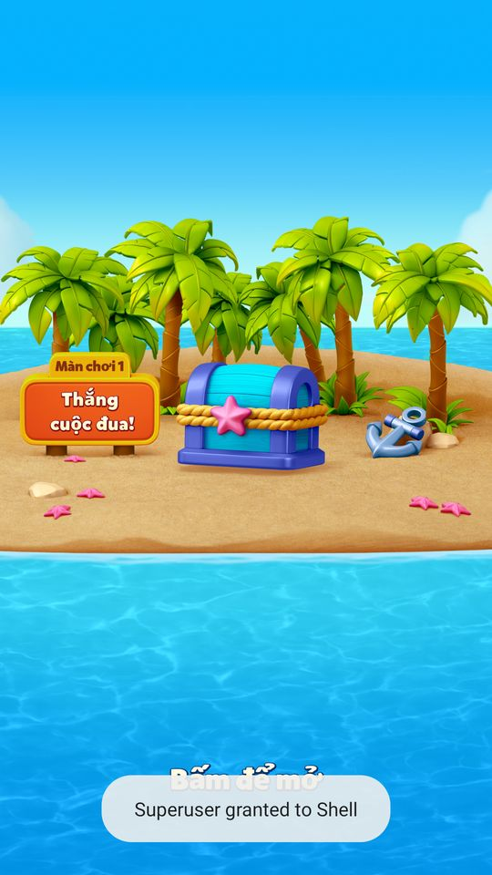
Bấm Nhận mở màn rương chặng1, yêu cầu Bấm để mở. 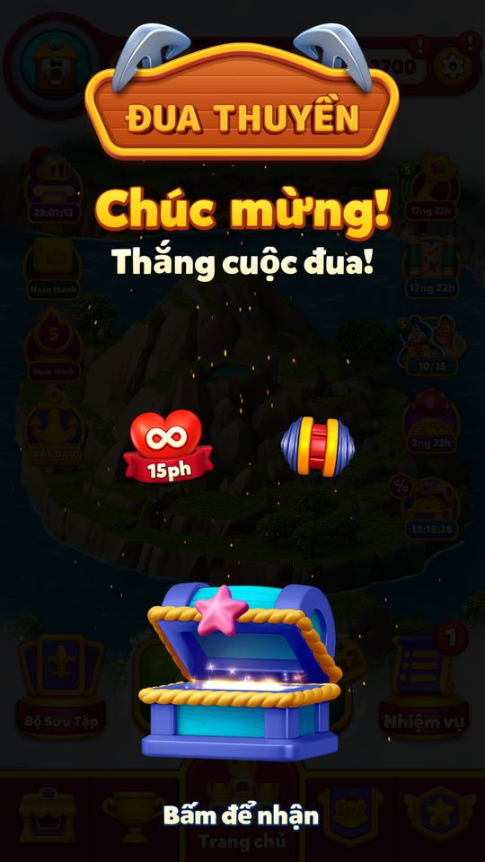
Mở rương:15phút mạng vô hạn+Rocket; Rocket24→25, ClaimState0→2 ngay popup thưởng. 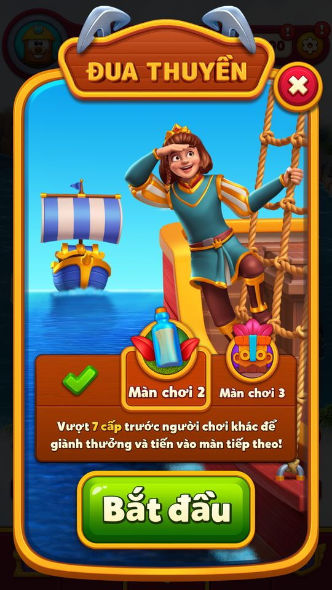
Đóng thưởng chặng1: start chọn chặng2 mục tiêu7; DB Stage vẫn1,ClaimState2 cho đến khi vào nhóm tiếp. 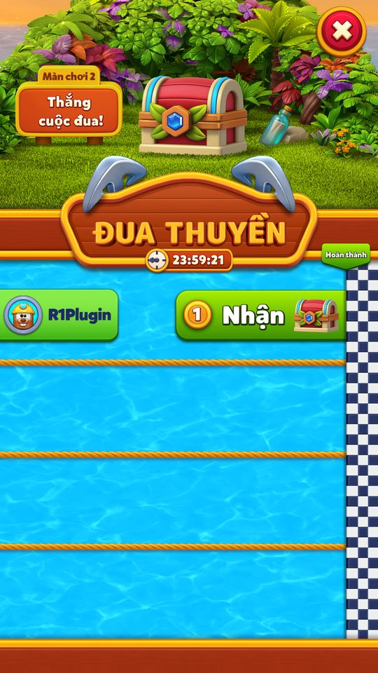
Fixture chặng2 đạt7,rank1,final: hiện hàng Nhận rương2. 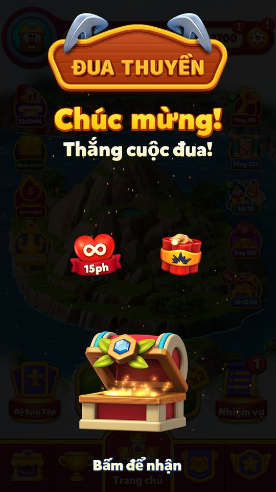
Nhận rương2:15phút mạng vô hạn+Dynamite1, ClaimState0→2. 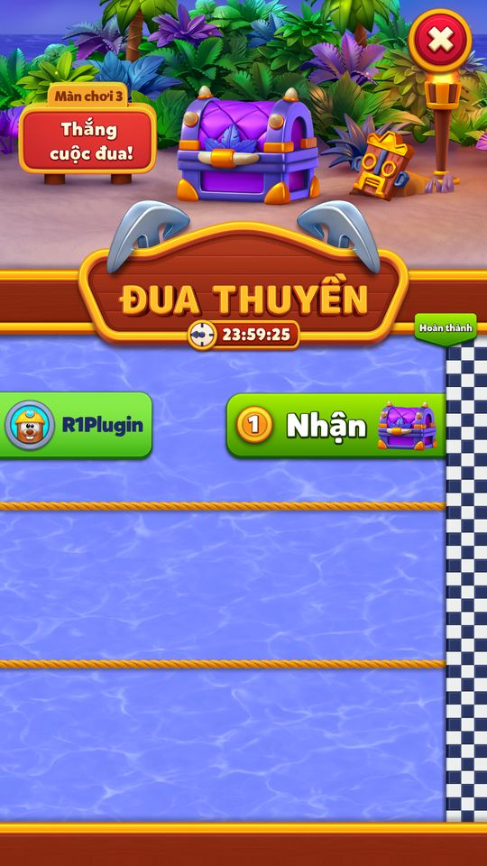
Fixture chặng3 đạt10,rank1,final: hiện hàng Nhận rương3. 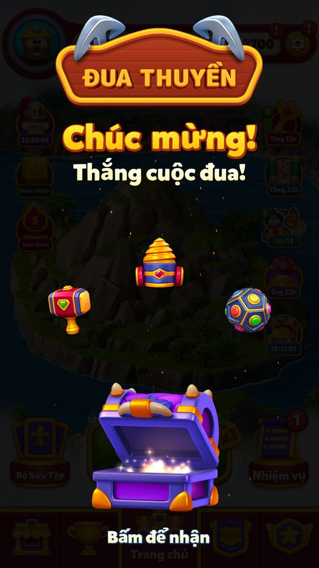
Nhận rương3:ElectroBall1+Hammer1+Drill1; restart ngay popup trước bấm đóng. 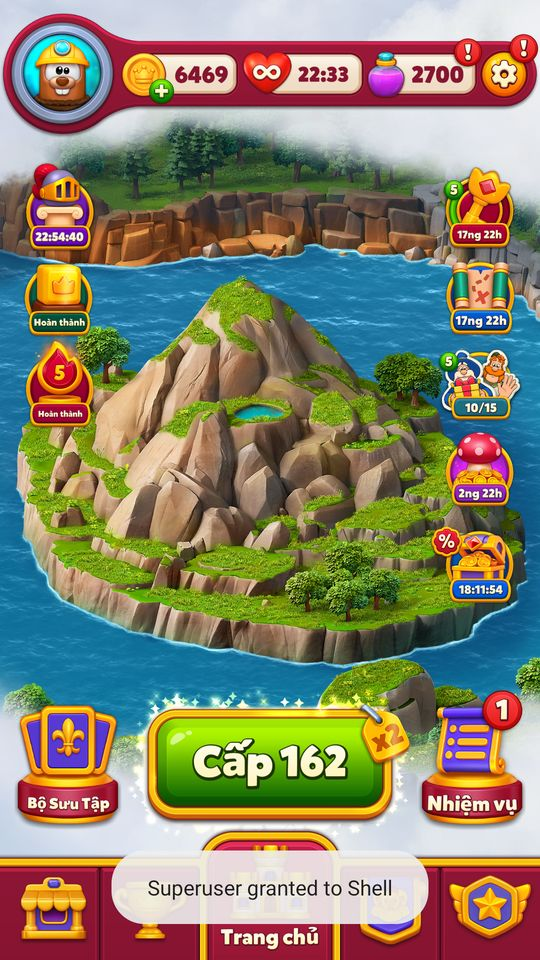
Restart giữ phần thưởng chặng3 và ClaimState2, icon đua không còn trên Home; không nhận lặp. - Playtest 12/11/2026 — bằng chứng quan sáttesterPlaytestCác ảnh là quan sát từng bước. Mode/override ghi trong appendix/playtest-20261112; chưa tương đương toàn UC đã pass.
Cache event397/version409, gia hạn offline: start chặng1 yêu cầu vượt5level; chưa ghép nhóm. Bấm Bắt đầu: spinner khi UID bị cô lập; không tạo nhóm thật. Fixture nhóm1 chưa có PlayerData: giao diện5 làn trống, chặng1 mục tiêu5. Tooltip chặng1 theo cache:15phút mạng vô hạn+Rocket1. Info giới thiệu vượt level trước đối thủ, qua3chặng và nhận thưởng. Fixture chặng2: mục tiêu7, tooltip15phút mạng vô hạn+Dynamite1;4làn. Fixture chặng3: mục tiêu10, tooltip ElectroBall1+Hammer1+Drill1;3làn. Fixture score5/rank1/HasFinalList nhưng thiếu PlayerData: hiện Thắng cuộc đua, chưa có hàng nhận thưởng. Bổ sung bản ghi chính tài khoản vào PlayerData type10/11: hàng người chơi và nút Nhận xuất hiện; không có đối thủ thật. Bấm Nhận mở màn rương chặng1, yêu cầu Bấm để mở. Mở rương:15phút mạng vô hạn+Rocket; Rocket24→25, ClaimState0→2 ngay popup thưởng. Đóng thưởng chặng1: start chọn chặng2 mục tiêu7; DB Stage vẫn1,ClaimState2 cho đến khi vào nhóm tiếp. Fixture chặng2 đạt7,rank1,final: hiện hàng Nhận rương2. Nhận rương2:15phút mạng vô hạn+Dynamite1, ClaimState0→2. Fixture chặng3 đạt10,rank1,final: hiện hàng Nhận rương3. Nhận rương3:ElectroBall1+Hammer1+Drill1; restart ngay popup trước bấm đóng. Restart giữ phần thưởng chặng3 và ClaimState2, icon đua không còn trên Home; không nhận lặp.


3 chặng (mặc định APK, island_race_default_config.json)
| Chặng | Số thuyền | Level cần thắng | Cộng dồn | Rương cho người về nhất |
|---|---|---|---|---|
| 1 | 5 | 5 | 5 | UL 15 phút + UR 15 phút |
| 2 | 4 | 7 | 12 | UL 15 phút + UD 15 phút + 1 R |
| 3 | 3 | 10 | 22 | 1 D + 1 EB + 1 H + 1 DR |
APKCode Số thuyền từ hằng FirstStagePlayerCount 5 / SecondStagePlayerCount 4 / ThirdStagePlayerCount 3; DefaultTarget 10. Mã thưởng: C coin, D Dynamite, R Rocket, EB Electro Ball, H Hammer, BR Battle Ram, DR Drill, WH Wizard Hat, BP Bomber Plane, PL gói booster đầu level; UL/UR/UD/UEB = mạng / Rocket / Dynamite / Electro Ball vô hạn trong N phút.
Luật và hằng số
| Hằng / trường | Giá trị | Ý nghĩa |
|---|---|---|
| UnlockLevel | 86 | level mở |
| get_LastHours | 15 phút | không vào khi event còn ≤ 15 phút |
| RewardedPlayerCount | 1 | chỉ người về nhất có rương |
| MaxStage | 3 | số chặng |
| ul / UnlimitedLifeRewardDurationInMinutes | 30 phút | quà mạng vô hạn khi vào (nếu server bật) |
| IslandRaceClaimState | NotSet 0 / Lose 1 / Win 2 | kết quả chặng |
| FeatureDependency | left[6] p80, preLevel p10 | ô icon chung với Gem Hunt |
CodeAPKLive 11/11 IslandRaceManager, IslandRaceConfig, FeatureDependencyConfig (APK và live 11/11 giống nhau).
Điểm mỗi level thắng ở các giải cùng thời
| Event | Điểm / level thắng | Thua level |
|---|---|---|
| Island Race | +1 | không lùi |
| Weekly Contest | +1 | không trừ |
| Grand Tournament | hệ số level (×1…×10, Magic Pot ×2) | không trừ |
| Flying Contest | hệ số level × hệ số chuỗi (×1…×10) | chuỗi về ×1 |
| Kingdom Pass | hệ số level | không trừ |
| Power Rush | Flames từ power-up + 10 × hệ số level | mất Flames của level đó (suy luận) |
Code LastPlayedLevelData.AddRewardDatas: islandRaceData và weeklyContestData cộng 1; grandTournamentData, kingdomPassData cộng hệ số; flyingContestData cộng hệ số × chuỗi; powerRushLevelData cộng hệ số × 10.
Config client thực nhận 12/11 — ServerEventConfig
| Nhánh/khóa | Giá trị/phạm vi |
|---|---|
| primary | 2 phần tử |
Nguồn: User__IslandRaceTableItem__ServerEventConfig.json; SHA256 f08a250e290ca9d7188dd37ab295b4753a7e9104f79c9f81bbd8dd94323f737f. Xem appendix/client-config-samples.md; chưa coi là mọi segment server.
Vận dụng cho game khác
- Đua “ai về đích trước” với mục tiêu nhỏ (5 level): luật hiểu trong một câu, hợp với người chơi mới và phiên ngắn.
- Chặng sau ít người hơn nhưng mục tiêu dài hơn và rương lớn hơn: mỗi chặng thắng là một lần “lên hạng” rõ ràng.
- Điểm phẳng +1 / level: người chơi không bị lợi thế hệ số của người có Magic Pot, mọi level đều bằng nhau — thích hợp làm event cân bằng bên cạnh các giải tính hệ số.
- Thưởng là booster vô hạn 15 phút: người thắng có lý do chơi tiếp ngay, nối sang chặng sau.
- Nhận định Rủi ro: chỉ 1 người thắng mỗi chặng nên 4/5 người chơi chặng 1 ra về tay trắng. Nếu đối thủ là bot, cần điều tốc độ để người chơi trung bình thỉnh thoảng thắng.
Ảnh cần chụp (7) — 17 ảnh đã gắn
Chụp vào screens/deep_1112/IslandRace/ rồi ghi tên file vào flow[].shots.
- Dialog bắt đầu / nhắc: IslandRaceStartDialog với tooltip rương chặng 1
- Bấm Start: IslandRaceScreen chặng 1: 5 thuyền, vạch đích
- Thắng level → tiến 1 ô: Prelevel có IslandRacePrelevelPanel “Race to 5 levels!”
- Thuyền đối thủ chạy: Về Home sau level: thuyền chạy trên màn đua
- Về đích trước → thắng chặng: Popup “You won the race!” và rương chặng
- Người khác về trước → thua: Bảng “Race is over!”
- Chặng 2 và 3: Màn đua chặng 2 (4 thuyền, màu biển khác)
Bảng tổng hợp mọi tính năng đã làm chi tiết: RoyalKingdom_ThietKeChiTiet.xlsx.
Mở khóa & điểm vào
IslandRaceManager.get_UnlockLevel = 0x56 = 86. Vào được (IsEventReadyToEnter/get_CanEnterEvent) khi: server có event mới hoặc tiến trình chưa hoàn thành; thời gian event server còn > 15 phút (get_LastHours = ConvertMinToMs(15)); nếu đã hết level thường thì phải có arena đang mở mà thời gian arena còn > 15 phút (HasEnoughTimeToEnter, ArenaManager.IsThereActiveArena/IsUserInArena). Vị trí icon: FeatureDependencyConfig cột trái nhóm 7 ISLAND_RACE (12) priority 80 chung ô với GEM_HUNT (20) priority 58; prelevel priority 10 (đầu danh sách).
Điểm vào:
- Icon Home cột trái (
IslandRaceIcon,IslandRaceIconPanel) - Dialog bắt đầu / nhắc (
IslandRaceStartDialog, reminder popup) - Màn đua (
IslandRaceScreen— thuyền, đích, rương chặng) - Panel ở prelevel (
IslandRacePrelevelPanel, vị trí từIslandRacePrelevelPositionConfig) - Thẻ Events tab (tiêu đề
IslandRaceTitle, textIslandRaceStartPopupStageText1'Stage {0}') - Tooltip rương tự động (
ShouldShowAutoChestTooltip) - Task Medal Missions thắng chặng (
IslandRaceWinStageMedalMissionsTask)
Cách hoạt động
- Server gửi event (
IslandRaceEventInfo, configprimary {r, t, ul}) qua ping/GetIslandRaceHttpCommand; bản server và bản user lưu tách (IslandRaceLocalData), thiếu config thì dùngisland_race_default_config. - Người chơi bấm Start (
OnStartButtonClicked) →TryEnterEventgửiEnterIslandRaceHttpCommand, nhận nhóm; nếu configul = truethìGiveUnlimitedLifeRewardcộng 1.800 giây (30 phút) mạng vô hạn. - Mỗi level thắng:
LastPlayedLevelData.AddRewardDatascộng đúng 1 vàoislandRaceData(không nhân hệ số);AddLevelEndData→ProcessLevelData→UpdateIslandRaceHttpCommandgửi điểm;UpdateRankLocallycập nhật hạng. ShouldProgresschỉ cho cộng khi trong nhóm, còn giờ và chưa đạt mục tiêu chặng.- Server trả điểm các thuyền khác (
UpdateMembers,didAnyPlayerReachTarget); khi có người về đích, danh sách cuối (FinalListReceived) được chốt. - Người hạng 1 có điểm ≥ mục tiêu (
WillGetReward) bấm Claim/Continue (ClaimOrContinueButtonClicked) nhận rương chặng (nguồn 'IR-Step',IslandRaceConfigData.TryGetStepForStage(stage)) và đi tiếp chặng sau; thua thì nhận trạng thái Lose. - Hết giờ hoặc xong 3 chặng → phiên cuối (
LastSessionCompleted) và reset dữ liệu đua.
Phần thưởng
Phần thưởng (theo GDD)
| Ngữ cảnh | Phần thưởng | Bằng chứng |
|---|---|---|
| Thắng chặng 1 (5 người, 5 level) | ∞15 ULphút · Mạng vô hạn + ∞15 URphút · Rocket vô hạn | island_race_default_config.json r[0] |
| Thắng chặng 2 (4 người, 7 level) | ∞15 ULphút · Mạng vô hạn + ∞15 UDphút · Dynamite vô hạn + 1 RRocket | island_race_default_config.json r[1] |
| Thắng chặng 3 (3 người, 10 level) | 1 DDynamite + 1 EBElectro Ball + 1 HHammer + 1 DRDrill | island_race_default_config.json r[2] |
| Khi vào đua | 30 phút mạng vô hạn nếu config ul = true | IslandRaceManager.GiveUnlimitedLifeReward |
| Ghi đè | RewardOverrideEventType.IslandRace (15) | IslandRaceManager.GetOverrideEventTypes |
Số liệu chính
| Chỉ số | Giá trị | Nguồn |
|---|---|---|
| Level mở | 86 | IslandRaceManager.get_UnlockLevel · code const |
| Không vào khi event còn ≤ 15 phút | 15 phút (ConvertMinToMs(15)) | get_LastHours · code const |
Use case (14)
Bấm vào từng use case để mở. Mở/đóng tất cả
UC-01 Nhận event đua từ server
Các bước- GetEventInfo(originType); AppendCommandsToPingOnly ('Replace last command')
- UpdateInfo: event bị xoá → 'Event {0} is deleted' → ClearData
- Lưu serverEventId/EndDate/Config/ConfigVersion vào IslandRaceTableItem
| Actor | Server |
|---|---|
| Trigger | Ping / GetIslandRaceHttpCommand |
| Điều kiện | Level ≥ 86 |
| Kết quả | Icon đua xuất hiện ở trạng thái 'Start' |
| Quy tắc / số liệu | get_IsStartableEvent cho Events tab |
| Evidence | IslandRaceManager.UpdateInfo; IslandRaceManager.GetEventInfo; IslandRaceManager.get_HasNewEventInServer |
UC-02 Dialog bắt đầu và nhắc
Các bước- ShouldShowStartDialog khi AutoDialogState == 0 → TryAddStartDialog → IslandRaceStartDialog
- ShouldShowReminderPopup: trong phiên được phép và isReminderPopupShown = false → reminder
- StartDialogOpened(isReminderDialog, isFromIcon): 'IsReminderPopupShown: {0}'
| Actor | System |
|---|---|
| Trigger | Vào Home khi có đua mới / chưa tham gia |
| Điều kiện | CanShowAutoDialog: CanShowAutoPopup, không bị chặn mọi entry surface, CanEnterEvent, bundle sẵn, không lùi giờ offline, không bị backend tắt |
| Kết quả | 'Beat levels before others! Complete the stages! Win Rewards!' |
| Quy tắc / số liệu | DidEverSeeStartDialog = bit 20 của IslandRaceProgress; reminderDialogClosedCount lưu số lần đóng Playtest13/11: Cache event397/version409, gia hạn offline: start chặng1 yêu cầu vượt5level; chưa ghép nhóm. |
| Evidence | IslandRaceManager.TryAddStartDialog; IslandRaceManager.get_ShouldShowReminderPopup; IslandRaceManager.StartDialogOpened; island_sweep_ledger.json; EV_Island_* |
UC-03 Vào đua (Start)
Các bước- OnStartButtonClicked(origin, evtData) → TryEnterEvent → EnterIslandRaceHttpCommand
- TryEnterFromEventsTab cho đường Events tab
- Nhận nhóm (groupId bit 21–84), stage = 1 (InitialStage)
- Analytics IslandRaceEnter
| Actor | Player |
|---|---|
| Trigger | Bấm Start trên dialog/màn đua/Events tab |
| Điều kiện | CanEnterEvent; HasEnoughTimeToEnter (> 15 phút) |
| Kết quả | Màn đua với 5 thuyền (FirstStagePlayerCount) |
| Quy tắc / số liệu | Hết level thường: chỉ vào được nếu arena đang mở và còn > 15 phút Playtest13/11: Bấm Bắt đầu: spinner khi UID bị cô lập; không tạo nhóm thật. |
| Evidence | IslandRaceManager.OnStartButtonClicked; IslandRaceManager.TryEnterEvent; IslandRaceManager.HasEnoughTimeToEnter; island_sweep_ledger.json; EV_Island_* |
UC-04 Tặng 30 phút mạng vô hạn khi vào
Các bước- get_WillGrantUnlimitedLifeReward (server config ul)
- GiveUnlimitedLifeReward: LifeInfoView.DisableTextUpdate, LifeHelper.AddUnlimitedLivesInSeconds(1800)
- didGrantUnlimitedLifeReward = true; TryEnableLifeInfoTextUpdate; log 'Unlimited life reward granted for event: {0}'
| Actor | System |
|---|---|
| Trigger | Vào đua thành công |
| Điều kiện | UserConfig.ul = true |
| Kết quả | 30 phút mạng vô hạn |
| Quy tắc / số liệu | UnlimitedLifeRewardDurationInMinutes = 30 (0x708 giây); mặc định client không có trường ul (false) |
| Evidence | IslandRaceManager.GiveUnlimitedLifeReward; IslandRaceManager.get_WillGrantUnlimitedLifeReward |
UC-05 Thắng level → thuyền tiến 1
Các bước- OnLevelWin: LevelEndWinState = true
- LastPlayedLevelData.AddRewardDatas: islandRaceData.Add(1)
- AddLevelEndData ('LevelEnd: {0}') → ProcessLevelData → UpdateIslandRaceHttpCommand
- UpdateRankLocally ('Update rank: {0}')
| Actor | System |
|---|---|
| Trigger | Thắng level |
| Điều kiện | ShouldProgress: trong nhóm, còn > 100 ms, chưa đạt mục tiêu chặng (DidReachCurrentTarget = false), chưa có danh sách cuối |
| Kết quả | Điểm (score) +1, thuyền tiến trên màn đua |
| Quy tắc / số liệu | +1 mỗi level thắng, không nhân hệ số Hard/Magic Pot; thua chỉ đặt LevelEndWinState = false, không trừ điểm |
| Evidence | LastPlayedLevelData.AddRewardDatas; IslandRaceManager.AddLevelEndData; IslandRaceManager.ShouldProgress |
UC-06 Cập nhật thuyền đối thủ
Các bước- IslandRaceDataHelper.UpdateMembers(response, isRemainingUserEventTimeFinished, out didAnyPlayerReachTarget)
- GetEventPlayerData / GetMaxScore cho UI; groupUsersSerializedData cache
- TryAddIconAnimations(fromLevelWinFlow) chạy animation thuyền
| Actor | Server |
|---|---|
| Trigger | Response Get/Update |
| Điều kiện | Trong nhóm |
| Kết quả | Người chơi thấy vị trí các thuyền khác |
| Quy tắc / số liệu | Server quyết định tốc độ thuyền đối thủ (bot hay người thật: không rõ) |
| Evidence | IslandRaceDataHelper.UpdateMembers; IslandRaceManager.TryAddIconAnimations; IslandRaceDataHelper.GetMaxScore |
UC-07 Về đích trước → thắng chặng
Các bước- Popup claim (TryAddClaimDialog: 'Push claim popup to flow by {0}', 'IROpen')
- ClaimOrContinueButtonClicked: IslandRaceConfigData.TryGetStepForStage(stage) → ClaimHelper.GetAndAddRewardsToInventory (nguồn 'IR-Step')
- IslandRaceEvtHelper.SendClaimAnalyticsEvent (IslandRaceClaim); IslandRaceProgress.Claim (ClaimState Win)
| Actor | Player |
|---|---|
| Trigger | Đạt mục tiêu chặng trước người khác |
| Điều kiện | WillGetReward: CanClaimEvent, rank ≤ 1, score ≥ CurrentTarget |
| Kết quả | Rương chặng vào kho (IslandRaceChestRewardPanel); chuyển chặng tiếp |
| Quy tắc / số liệu | RewardedPlayerCount = 1; mục tiêu t = [5, 7, 10]; MaxStage = 3 Playtest13/11: Bổ sung bản ghi chính tài khoản vào PlayerData type10/11: hàng người chơi và nút Nhận xuất hiện; không có đối thủ thật. Mở rương:15phút mạng vô hạn+Rocket; Rocket24→25, ClaimState0→2 ngay popup thưởng. Nhận rương3:ElectroBall1+Hammer1+Drill1; restart ngay popup trước bấm đóng. Restart giữ phần thưởng chặng3 và ClaimState2, icon đua không còn trên Home; không nhận lặp. |
| Evidence | IslandRaceManager.ClaimOrContinueButtonClicked; IslandRaceManager.get_WillGetReward; IslandRaceManager.TryAddClaimDialog; island_sweep_ledger.json; EV_Island_* |
UC-08 Người khác về đích trước → thua chặng
Các bước- FinalListReceived chốt danh sách
- ClaimState = Lose (IslandRaceClaimState 1); bảng thông báo IslandRaceBoardTextState.Over
- Continue → LastSessionEntered / ResetEventRecordData
| Actor | System |
|---|---|
| Trigger | didAnyPlayerReachTarget và người chơi không hạng 1 |
| Kết quả | Không có rương; đua kết thúc cho người chơi |
| Quy tắc / số liệu | IslandRaceClaimState: NotSet 0, Lose 1, Win 2 (bit 88–89) |
| Evidence | IslandRaceDataHelper.FinalListReceived; IslandRaceManager.ClaimOrContinueButtonClicked; IslandRaceLocalData.ResetEventRecordData |
UC-09 Sang chặng 2, 3
Các bước- Stage tăng (bit 85–87), nhóm mới ít người hơn (4 rồi 3)
- GetStageForUi; IslandRaceSceneStageConfig đổi màu biển, kích thước thuyền, nền header, sprite rương theo chặng
| Actor | Player |
|---|---|
| Trigger | Thắng chặng trước và bấm Continue |
| Điều kiện | stage < 3 |
| Kết quả | Chặng mới với mục tiêu cao hơn và rương lớn hơn |
| Quy tắc / số liệu | FirstStagePlayerCount 5, SecondStagePlayerCount 4, ThirdStagePlayerCount 3 Playtest13/11: Đóng thưởng chặng1: start chọn chặng2 mục tiêu7; DB Stage vẫn1,ClaimState2 cho đến khi vào nhóm tiếp. Fixture chặng2: mục tiêu7, tooltip15phút mạng vô hạn+Dynamite1;4làn. Fixture chặng3: mục tiêu10, tooltip ElectroBall1+Hammer1+Drill1;3làn. |
| Evidence | IslandRaceDataHelper.GetStageForUi; IslandRaceProgress.get_Stage; island_sweep_ledger.json; EV_Island_* |
UC-10 Hết giờ / phiên cuối
Các bước- IsRemainingUserEventTimeFinished → LastSessionCompleted(origin): 'Last session completed for event: {0}'
- OnApplicationQuit cũng gọi LastSessionCompleted
- StartAfterLastSessionProcess; TryResetAutoDialogState; ClearPlayers; IslandRaceIcon.ResetCachedData
| Actor | System |
|---|---|
| Trigger | Thời gian event user hết |
| Kết quả | Đua đóng, sẵn sàng cho event mới |
| Evidence | IslandRaceManager.LastSessionCompleted; IslandRaceManager.StartAfterLastSessionProcess; IslandRaceManager.OnApplicationQuit |
UC-11 Tooltip rương tự động
Các bước- Hiện tooltip rương chặng
- AutoChestTooltipSeen lưu eventId và stage
| Actor | System |
|---|---|
| Trigger | Vào Home khi đang đua |
| Điều kiện | ShouldShowAutoChestTooltip (autoTooltipShownEventId / lastAutoTooltipShownStage chưa cho chặng này) |
| Kết quả | Mỗi chặng tooltip hiện một lần |
| Quy tắc / số liệu | Playtest13/11: Tooltip chặng1 theo cache:15phút mạng vô hạn+Rocket1. Tooltip được mở bằng tap, chưa kiểm chứng tự hiện. |
| Evidence | IslandRaceManager.ShouldShowAutoChestTooltip; IslandRaceManager.AutoChestTooltipSeen; island_sweep_ledger.json; EV_Island_* |
UC-12 Icon prelevel và chặn bởi Arena
Các bước- ShouldShowIconInPrelevel = false (icon không hiện trong hàng icon prelevel)
- IslandRacePrelevelPanel hiển thị vị trí thuyền qua APrelevelBottomPanel (GetPrelevelPanelConfig)
- IsEventReadyToEnter: IsAllLevelsCompleted → kiểm tra ArenaManager
| Actor | System |
|---|---|
| Trigger | Mở prelevel |
| Kết quả | Panel đua dưới prelevel |
| Evidence | IslandRaceManager.ShouldShowIconInPrelevel; IslandRaceManager.IsEventReadyToEnter |
UC-13 Bị tắt / refresh / ghi đè
Các bước- OnDisabledByBackend: 'Disable Island Race event: {0} from backend!'
- RefreshProgress / GetByteArrayProgress
- GetOverrideEventTypes = [IslandRace 15]; GetOverrideEventType luôn 15
| Actor | Server |
|---|---|
| Trigger | Cờ disable, RefreshResponse |
| Kết quả | Đua ẩn / đồng bộ; rương có thể bị ghi đè |
| Quy tắc / số liệu | RewardOverrideEventType.IslandRaceWeekday (25) có trong enum nhưng IslandRaceManager không dùng |
| Evidence | IslandRaceManager.OnDisabledByBackend; IslandRaceManager.RefreshProgress; IslandRaceManager.GetOverrideEventType |
UC-14 Admin tăng điểm
Các bước- AdminIncrementScore (thời gian không hợp lệ → 'Time is not valid, ping will be sent instead of {0}')
| Actor | System |
|---|---|
| Trigger | Công cụ admin |
| Kết quả | Dùng cho kiểm thử |
| Evidence | IslandRaceManager.AdminIncrementScore |
Cấu hình (15)
Gộp mọi nguồn: const trong code, JSON mặc định trong Resources, config class, storage key, AB test, giá trị server trong snapshot thiết bị 11/11/2026.
| Nguồn | Key | Kiểu | Giá trị | Ý nghĩa | Nơi định nghĩa |
|---|---|---|---|---|---|
| code const | IslandRaceManager.get_UnlockLevel | int | 86 | Level mở | IslandRaceManager |
| code const | UnlimitedLifeRewardDurationInMinutes | int | 30 (AddUnlimitedLivesInSeconds 1800) | Mạng vô hạn khi vào đua (nếu ul) | IslandRaceManager |
| code const | get_LastHours | long | 15 phút (ConvertMinToMs(15)) | Không vào khi event còn ≤ 15 phút | IslandRaceManager.HasEnoughTimeToEnter |
| code const | IslandRaceConfig consts | int | RewardedPlayerCount 1; DefaultTarget 10; FirstStagePlayerCount 5; SecondStagePlayerCount 4; ThirdStagePlayerCount 3; InitialStage 1; MaxStage 3 | Luật chặng | IslandRaceConfig |
| code const | IslandRaceProgress bit layout | bit array 92 | eventId 0–17; AutoDialogState 18–19; DidEverSeeStartDialog 20; GroupId 21–84; Stage 85–87; ClaimState 88–89; IsMedalMissionsCreditHandled 91 | Tiến trình ByteArray | IslandRaceProgress |
| json default | primary.t | int[] | [5, 7, 10] | Số level thắng để về đích chặng 1/2/3 | Resources/island_race_default_config.json |
| json default | primary.r[0] (s1) | IslandRaceStage | 15 UL + 15 UR | Rương chặng 1 | island_race_default_config.json |
| json default | primary.r[1] (s2) | IslandRaceStage | 15 UL + 15 UD + 1 R | Rương chặng 2 | island_race_default_config.json |
| json default | primary.r[2] (s3) | IslandRaceStage | 1 D + 1 EB + 1 H + 1 DR | Rương chặng 3 | island_race_default_config.json |
| json default | primary.ul | bool | (không có → false) | Bật quà 30 phút mạng vô hạn khi vào | IslandRaceConfigData.ul |
| config class | IslandRaceLocalData | DataSaver fields | serverEventId, serverEventEndDate, serverEventConfig, serverEventConfigVersion, userEventEndDate, userEventConfig, userEventConfigVersion, rank, score, hasFinalList, isLastSessionOfEvent, groupUserIdsTag, groupUsersLastFetchTime, groupUsersSerializedData, lastFetchedScore, isReminderPopupShown, reminderDialogClosedCount, autoTooltipShownEventId, lastAutoTooltipShownStage | Dòng trong bảng IslandRaceTableItem | IslandRaceLocalData |
| config class | IslandRacePrelevelPositionConfig / IslandRaceSceneStageConfig | asset | userCount + positions[]; seaColor, shipScale, shipParticleColor, header/timer background, chestSprite | Bố cục prelevel theo số người và giao diện từng chặng | IslandRace UI |
| server info (live 11/11) | IslandRaceTableItem | SQLite | 0 dòng | Tài khoản dưới level 86 | U_<id> |
| server info (live 11/11) | FeatureDependencyConfig | JSON | left[6] = ISLAND_RACE (12) p80 / GEM_HUNT (20) p58; preLevel[0] = ISLAND_RACE p10 | Chung ô với Gem Hunt; ưu tiên cao nhất ở prelevel | U_<id>.LocalKeyValue FeatureDependencyConfig |
| client SQLite backup 12/11/2026 | Observed20261112.ServerEventConfig | observed-config | branches: primary selection: | Mẫu cache thực nhận; nhánh có trong JSON không đồng nghĩa đã kích hoạt UI. | facts/runtime/review_20261112/config_samples/User__IslandRaceTableItem__ServerEventConfig.json |
Backend / server
| Command | Chiều | Mục đích |
|---|---|---|
GetIslandRaceHttpCommand | client→server | Thông tin event, nhóm, điểm các thuyền |
EnterIslandRaceHttpCommand | client→server | Vào đua / vào chặng |
UpdateIslandRaceHttpCommand | client→server | Gửi điểm sau level |
ByteArray progress (IRefreshByteArray) | client↔server | Đồng bộ IslandRaceProgress |
Định dạng request/response: Giao thức backend.
Giao diện (UI)
| Element | Class | Mục đích |
|---|---|---|
| Màn đua | Royal.Scenes.Home.Ui.Dialogs.IslandRace.IslandRaceScreen | Thuyền (IslandRaceRowData), đích, rương, kết quả |
| Icon | Royal.Scenes.Home.Ui.Dialogs.IslandRace.IslandRaceIcon | Trạng thái đua, đồng hồ |
| Dialog bắt đầu / info | Royal.Scenes.Home.Ui.Dialogs.IslandRace.IslandRaceStartDialog | Giới thiệu chặng; IslandRaceInfoDialog luật |
| Panel prelevel | Royal.Scenes.Home.Ui.Dialogs.IslandRace.IslandRacePrelevelPanel | Vị trí thuyền trước level |
| Panel rương / nút claim | Royal.Scenes.Home.Ui.Dialogs.IslandRace.IslandRaceChestRewardPanel | Rương chặng; IslandRaceClaimButtonPanel |
Analytics (4)
| Event | Tham số | Khi nào |
|---|---|---|
IslandRaceEnter | Vào đua | |
IslandRaceClaim | stage, InventoryPackage (GetInventoryPackageForAnalytics) | Nhận rương chặng |
IslandRaceFinish | Kết thúc | |
EventSceneOpen 'IROpen' | Mở màn đua từ popup/icon |
Storage keys
IslandRaceTableItem (bảng SQLite) IslandRaceProgress (ByteArrayRemoteKeyValue) PlayerData (thuyền đối thủ)
Chưa đọc được / ghi chú
- Biến thể Weekday (RewardOverrideEventType.IslandRaceWeekday = 25) chỉ có trong enum; client không tham chiếu — có thể là cấu hình server riêng cho ngày thường.
- Độ dài event và lịch mở do server; snapshot không có.
- Đối thủ là người thật hay bot, tốc độ của họ: server.
- Cơ chế chính xác chuyển chặng (Enter lại hay server tự cấp nhóm mới) chưa đọc hết.
Tính năng liên quan
Đấu trường (Champions Arena) Mạng (Lives) Gem Hunt Ưu tiên & mở tính năng Medal Missions Luồng level
Nguồn đã đọc
- features/IslandRaceManager.md
- PseudoC/Assembly-CSharp/Royal/Player/Context/Units/IslandRace/IslandRaceManager.c
- PseudoC/.../Dialogs/IslandRace/IslandRaceDataHelper.c
- PseudoC/.../Data/Session/LastPlayedLevelData.c
- Resources/island_race_default_config.json
- facts/runtime/live_1111 (FeatureDependencyConfig)